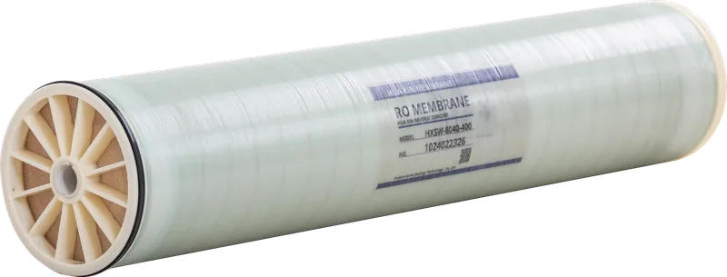

应用领域
六大领域，对应真实产品与真实数据。
以下每个领域都说明了水处理难点、膜的作用、设计前需确认的事项以及适用的华信产品。没有一种膜适用于所有水质，请将其作为与我们工程师沟通的起点。
零液体排放
零排放工业废水含盐量高、硬度高、易污染，需要频繁的强力清洗。脱盐率下降或易污染的膜会把更多负荷转嫁给蒸发器和结晶器。
膜的作用
反渗透在热法处理前对水流进行浓缩。此处选膜看重抗污染、耐清洗和抗氧化性能，而不仅是初始脱盐率。
设计要点
- 进水 TDS、硬度和硫酸盐决定结垢风险
- 清洗频率与清洗药剂（华信反渗透膜短时耐受 pH 1–13）
- 预处理，膜元件进水 SDI ≤ 5
抗污染

抗污染反渗透膜元件
抗污染反渗透膜，适用于 5,000 ppm 以下的高污染苦咸水，已在矿井水回用中经过 693 天现场验证。
海水

海水淡化反渗透膜元件
高脱盐、高通量反渗透膜，适用于 10,000 ppm 以上进水。不采用氧化后处理来人为提升初始性能。
相关产品：HX-BM
高品质饮用水
市政地表水和井水可能含有硬度、色度、异味和痕量微污染物，而完全脱盐会去除让水口感更好的矿物质。
膜的作用
纳滤可软化水质、去除有机物和微污染物，同时保留部分有益矿物质；前置超滤去除颗粒物和微生物。
设计要点
- 目标硬度与矿物质保留
- 当地饮用水认证要求（手册中未说明，请咨询华信）
- 纳滤前设置超滤或其他预处理
饮用水

高品质饮用水纳滤膜元件
高通量纳滤膜，用于市政地表水或井水的深度净化，保留有益矿物质，改善口感。
柱式超滤
柱式超滤（UF）膜组件
PVDF 中空纤维柱式超滤，孔径小于 30 nm，用于水净化和废水处理。
相关产品：HX-XLP
市政污水回用
市政再生水水质多变，所含有机物和生物负荷会污染下游膜系统。
膜的作用
MBR 以膜分离替代沉淀澄清；超滤和抗污染反渗透对出水进行深度处理以供回用。
设计要点
- 生物负荷与 MBR 规模（每个华信组件 150–400 m³/d）
- 反渗透段的污染风险
- 能耗与设计通量目标
膜生物反应器

膜生物反应器（MBR）组件
不锈钢框架组件，膜片间距大于 100 mm，用于市政和工业生化处理。
柱式超滤
柱式超滤（UF）膜组件
PVDF 中空纤维柱式超滤，孔径小于 30 nm，用于水净化和废水处理。
相关产品：HX-BWFR
海水淡化
海水含盐量高、生物污染风险大；硼脱除率和长期稳定性与初始指标同样重要。
膜的作用
海水反渗透膜元件承担淡化工段；同样的元件也可用于从浓水中提取高价值副产品。
设计要点
- 进水含盐量、温度与硼指标
- 生物污染控制与预处理
- HX-SW 操作压力最高 8.0 MPa
盐湖提锂
盐湖卤水成分差异很大；锂与镁及其他离子的分离是核心难点。
膜的作用
根据卤水定制选择性纳滤与反渗透膜，用于浓缩锂，减少对吸附剂或助剂的依赖。
设计要点
- 镁锂比与卤水组成
- 按项目定制开发膜产品
- 正式设计前进行中试

工业高纯水
半导体、医疗和食品生产需要稳定的纯水，且能耗要低。
膜的作用
低压和超低压反渗透以高脱盐率和高通量构成多级纯化的核心。
设计要点
- 二级反渗透与精处理
- XLP / LP 进水低于 1,000–2,000 ppm
- 设计通量下的吨水能耗
超低压

超低压反渗透膜元件
超低操作压力下的高产水量，适用于 1,000 ppm 以下进水。
低压

低压反渗透膜元件
节能高产水反渗透膜，适用于 2,000 ppm 以下进水，耐受反复酸碱清洗。
相关产品：HX-BW